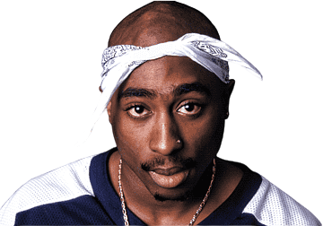

Tupac

Descrição
Tupac Amaru Shakur, mais conhecido pelos seus nomes artísticos 2Pac, Makaveli ou apenas Pac, foi um rapper, ator e compositor norte-americano, considerado por muitos como um dos melhores e mais importantes rappers de todos os tempos. Em 2010, ele já havia vendido pelo menos 75 milhões de cópias pelo mundo. (Nascimento: 16 de junho de 1971, East Harlem, Nova Iorque, Nova York, EUA) (Falecimento: 13 de setembro de 1996, Centro Médico Universitário de Las Vegas, Las Vegas Valley, Nevada, EUA)